{kind=link}
CO 2 для аквариума
Можно пропустить введение и эксперименты, и сразу перейти к описанию конструкции безнапорного генератора CO 2 . Это лучший вариант на сегодня.
Опыты с кислотой, содой и конструкцией генератора
В последнее время в моём аквариуме плохо растут растения. Валлиснерия еле выживает. Криптокорина и подобные растения размножаются так медленно, что все листы успевают обрасти чёрной бородой.
Однажды у меня уже был аквариум с сочными зелёными растениями без чёрной бороды или нитчатки.
- Аквариум стоял на подоконнике.
- Мы жили вчетвером в одной комнате коммунальной квартиры.
По этим двум причинам света и углекислого газа было много.
Освещение
Недавно я заменил люминисцентные лампы на светодиодные 2 по 30 вт в аквариуме 200 литров и 2 по 20 вт в аквариуме 100 литров. Теперь при освещении из растений поднимаются пузырьки кислорода. Чаще стали появляться новые листочки.
Пришло время добавлять CO 2
Я не собираюсь создавать "голландский" аквариум или "травник". Меня устраивает более-менее естественное биологическое равновесие в аквариуме. Подавление водорослей и буйные растения, требующие прополки - это не равновесие, а особое хобби. Мне интересно использовать новый вид ламп, и самодельный генератор CO 2 , чтобы посмотреть, что из этого получится. Это не аквариумный интерес, а инженерный интерес. Просто любопытство.
Балонная подача CO 2 кажется сложной. Это для профессионалов с красивыми большими подводными садами. Мне до этого пока далеко. Новичкам проще начинать с брагогенератора . Однажды я пробовал получать CO 2 из сахара и дрожжей.
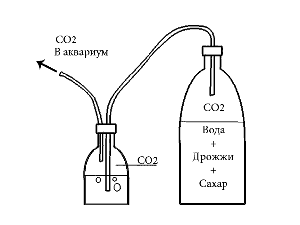
схема генератора CO
2 на дрожжах
{kind=link}
Эксперимент прекратился, так как неудобно каждое утро и вечер переключать краник, чтобы углекислый газ подавался только при наличии освещения. Также мне не нравился запах дрожжей.
Генератор на сахаре и дрожжах - однокомпонентный , и поэтому конструкция простая. Углекислый газ сначала выделяется бурно, потом всё медленнее. Время работы одной заправки - примерно неделя.
С тех пор появились электромагнитные клапаны для автоматизации подачи газа. Был изобретен двухкомпонентный генератор CO 2 без дрожжей с использованием лимонной кислоты и соды.
Самодельщики делают генераторы углекислого газа не только для аквариума. CO 2 на подоконнике улучшает рост комнатных цветов. CO 2 используется в продвинутых ловушках для комаров.
Химия
В присутствии воды лимонная кислота [C 6 H 8 O 7 ] и пищевая сода [NaHCO 3 ] реагируют и дают в результате цитрат натрия [Na 3 C 6 H 5 O 7 ], воду и углекислый газ.
Уравнение реакции:
C
6 H
8 O
7 + 3NaHCO
3 (кислота+сода в воде) ► Na
3 C
6 H
5 O
7 + 3H
2 O + 3CO
2 (соль вода газ)
без воды реакция не идёт
1 моль (192 грамма) лимонной кислоты даёт 3 моля углекислого газа. Получаемая при этом масса CO 2 равна 3x44 = 132 грамма, объём - 66 литров.
Все участвующие в химической реакции компоненты (сода, лимонная кислота, цитрат натрия, вода и углекислый газ) достаточно безопасны и могут использоваться для приготовления пищевых продуктов.
Напорный генератор "сода + лимонная кислота"
Генераторы с лимонной кислотой бывают с обратными клапанами (более стабильные)
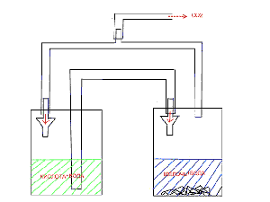
схема с обратными клапанами
{kind=link}
и без обратных клапанов (более надёжные)
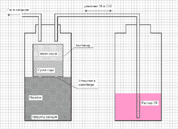
схема без обратных клапанов
{kind=link}
Оба типа работают при достаточно большом давлении 1.5-2 атм и используют кран тонкой регулировки подачи CO 2 , который также служит редуктором для снижения давления. Иногда приходится использовать дроссели, например в виде полой иглы от шприца, для уменьшения подачи кислоты и темпа выхода углекислого газа.
Благодаря двухкомпонентности процесс выработки CO 2 более стабильный, так как одна из компонент (лимонная кислота) подаётся малыми порциями по мере необходимости. При снижении давления газа в ёмкости с содой происходит перекачка небольшого количества раствора кислоты в соду. Как только выработка CO 2 восстановится и давление повысится, оно также повышается в ёмкости с кислотой. Таким образом в ёмкости с кислотой поддерживается постоянное (достаточно высокое) давление пока она не кончится. Сигналом подачи новой порции кислоты служит снижение давления CO 2 .
Использование генератора CO 2 с повышенным давлением похоже на использование CO 2 из баллона. После источника высокого давления нужен редуктор для получения небольшого рабочего давления порядка 0.05 атм = 50 сантиметров водяного столба. 50 см - это глубина аквариума. Такое выходное давление имеет безнапорный генератор на дрожжах. Фактически, давление на выходе безнапорного генератора задаётся глубиной погружения выходной трубки в аквариум. При глубине 40 см получим давление 40 см вод ст. Такому генератору не нужны краны, дроссели и редукторы.
Безнапорный генератор
Простой двухкомпонентный генератор CO 2 можно сделать без давления и без крана тонкой регулировки. Подаём кислоту в соду в нужном темпе. И получаем газ в нужном количестве.
Известны (но не получили распространения) конструкции генераторов углекислого газа, в которых кислота дозированно подаётся в соду насосом, или подаётся в соду самотёком из негерметичной ёмкости установленной выше ёмкости с содой на высоте, примерно равной глубине аквариума.
Есть более простая и компактная схема. Для подачи кислоты можно использовать отверстие или хорошо смачиваемую верёвочку - фитиль. Я видел как по такой верёвочке за 1 день вытек на стол стакан чая. Для настройки темпа подачи CO 2 подбираем диаметр фитиля.
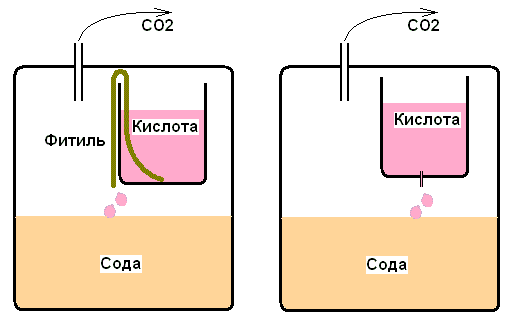
Выход газа из ёмкости с содой. Подача кислоты самотёком
через капилляр или фитиль.
Как и в безнапорном генераторе на дрожжах давление внутри генератора само поддерживается таким, чтобы газ подавался на глубину аквариума. Обычно не более 1м водяного столба.
Конструкция
Окончательная (на сегодня) конструкция генератора CO 2 будет описана в конце страницы. Сначала я расскажу, какие варианты были испытаны, какие у них достоинства и недостатки.
Для удобства экспериментирования, обслуживания и настройки кислоту и соду лучше поместить в отдельные ёмкости, соединённые трубками.
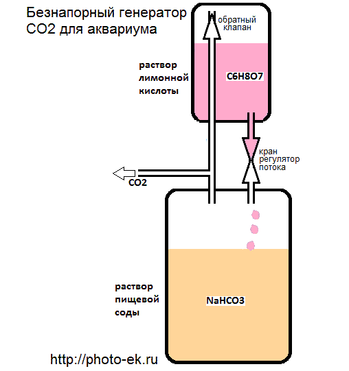
схема генератора
- В качестве ёмкостей удобно использовать бутылки от Кока-Колы
- 1 или 2 литра для раствора соды - 70 г соды на 700 мл воды
- 0.5 литра для раствора лимонной кислоты - 50 г кислоты на 250 мл воды
На трубке выравнивания давления стоит обратный клапан, чтобы при разборке конструкции из этой трубки не вытекала кислота.
В качестве регулятора потока используется кран для воздушной трубки. Регулируем подачу кислоты так, чтобы обеспечить нужный поток CO 2 . Подача кислоты видна по падающим каплям. Правильный темп подачи 1 капля за 5-20 сек. Если использовать соду с избытком, то, зная концентрацию лимонной кислоты и размер капли, вы можете оценить количество капель для получения нужного количества CO 2 . Чем меньше концентрация раствора лимонной кислоты, тем точнее можно регулировать выработку углекислого газа.
{kind=link}
Если размер капли примерно равен 3 мм, то 1 капля 10-процентного раствора лимонной кислоты даёт 1 куб.см. углекислого газа.
Время работы от одной заправки зависит от темпа химической реакции, который вы подобрали и от объёма растворов. Зная объём раствора кислоты, можно оценить время расходования кислоты по размеру и частоте падения капель.
Кран-регулятор можно использовать для отключения генератора на ночь. Чтобы не нарушать настройку крана-регулятора, можно использовать второй кран или зажим для отключения генератора, а кран-регулятор - только для настройки. Для автоматического отключения генератора на трубку подачи кислоты можно установить электромагнитный клапан.
В качестве реактора для растворения CO 2 в воде я пока использую распылитель.
В отличие от генератора на дрожжах в новом генераторе (1) есть возможность регулировки выработки CO 2 , (2) есть возможность отключения генератора, а также (3) нет запаха браги.
В отличие от напорного генератора снизились требования к герметичности, так как нет высокого давления. Благодаря этому (1) не нужен защитный клапан, (2) можно применять банки с широкими крышками, а не только бутылки от Кока-Колы. (3) Можно применять простой кран подачи кислоты вместо крана тонкой регулировки. Кроме того, в новом генераторе видна подача кислоты в соду, и (4) можно регулировать темп подачи кислоты по числу капель.
Чтобы убедиться, что нет потерь CO 2 из-за негерметичности можно использовать счётчик пузырьков.
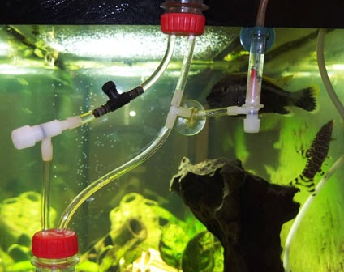
пример со счётчиком пузырьков
{kind=link}
Чтобы не использовать тройник, можно установить трубку отвода CO 2 в крышку бутылки с содой.
{kind=link}
Если вы сделали безнапорный генератор, и добились стабильной выработки CO 2 , но хочется ещё улучшить дизайн, то можете попробовать вообще убрать трубочки между банками кислоты и соды.
Упрощённая конструкция
Упрощённый генератор состоит из широкой банки для соды и пластиковой бутылочки для лимонной кислоты. Бутылочка приклеена герметиком сверху (или снизу) к крышке банки.
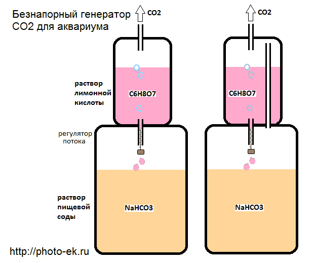
упрощённая схема безнапорного генератора
{kind=link}
Для подачи кислоты в соду самотёком в дне бутылочки сделано отверстие 1-3 мм. Подбирая диаметр отверстия, или вставляя в него капилляр (нитку, спичку) можно обеспечить необходимый темп выработки CO 2 . Причина использования капилляра в том, что герметик и пластик могут плохо смачиваться. Из-за этого в отверстии образуется воздушная пробка. Кроме того, капилляр позволяет использовать почти любые доступные трубки. Без него пришлось бы подбирать диаметр трубки, что не так легко.
{kind=link}
Проблема "воздушной пробки" упрощается, если использовать трубку выравнивания давления. При этом нужно принять меры, чтобы кислота вытекала не слишком быстро, например трубка для вытекания кислоты должна быть тоньше.
Если в качестве трубки использовать кусочек стержня шариковой ручки или кусочек трубки от "ватной палочки", то в качестве капилляра подходит "зубной ёршик". Он хорошо держится при вдвигании в трубку на любую глубину. Подобрав глубину установки ёршика, можно отрегулировать темп подачи кислоты и соответствующий темп выработки углекислого газа. При плохой смачиваемости трубки можно использовать одновременно ёршик и нитку.
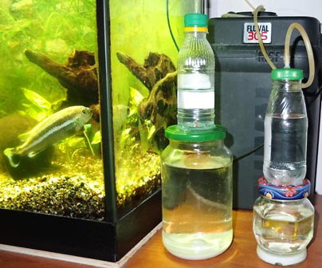
пример упрощённого генератора
{kind=link}
В отличие от системы с трубками в упрощённом генераторе нужно выполнять настройки до начала работы. Поскольку работа системы не зависит от давления, то при наладке, подборе трубочки и капилляров можно не закрывать крышку бутылочки с кислотой. При наладке системы используйте небольшое количество растворов рабочей концентрации. После того как стабильность выработки CO 2 налажена можно налить полную дозу растворов и подключить систему к аквариуму.
Для отключения подачи газа в упрощённой системе можно, использовать тройной кран (или тройник + кран) на трубке CO 2 , как это делают в генераторе на дрожжах. Открываете кран на ночь, и газ выходит не в аквариум, а в комнату. При этом генератор продолжает работать.
Внутренний генератор CO 2
А вдруг, после освоения "упрощённого генератора", вы захотите дальнейших упрощений, например, захотите вообще отказаться от трубок. Тогда вместо выходящей из верхней бутылочки трубки вставьте распылитель, к дну широкой банки прикрепите груз, поставьте новый ещё более простой генератор прямо в аквариум, а над ним поместите перевёрнутый пластиковый лоток (колокол для растворения CO 2 ). В качестве груза можно приклеить герметиком медный диск или диск из нержавейки снаружи к дну банки. Проще, но менее красиво - положить в банку шарики или гвозди из нержавейки.
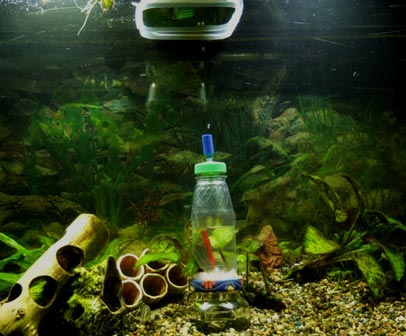
можно поместить генератор CO
2 прямо в аквариум
{kind=link}
Эта конструкция нравится мне ещё тем, что если где-то есть утечки, то утекающий углекислый газ даром не пропадёт. Всё попадёт в колокол, и будет растворено в воде в меру необходимости.
В отличие от внутреннего генератора на сухих компонентах в новой конструкции негерметичность не может привести к взрывной выработке CO 2 .
Надо сказать, что большое количество CO 2 можно получить и в нашем генераторе. Если сделать погружной генератор с трубкой компенсации давления, повалить его на бок и держать (если не держать, то он встанет вертикально, как неваляшка) то компоненты могут перетечь по трубке компенсации давления. Мы получим большое количество CO 2 и быстрое повышение давление в ёмкости. В аквариум некоторое время будет выходить много CO 2 . Если выход к распылителю будет затоплен изнутри, то в аквариум через распылитель будет выходить раствор лимонной кислоты. Я не представляю, чтобы такое стечение неблагоприятных событий произошло случайно или в результате неосторожности.
Мы рассмотрели довольно много вариантов безнапорных генераторов CO 2 на растворе соды и лимонной кислоты. Кроме достоинств, у этих конструкций есть недостатки. (1) При использовании большой бутылки от Кока-Колы, генератор работает нестабильно, так как при низком давлении CO 2 давление в этой бутылке чувствительно к давлению и температуре в комнате. (2) Использование обратного клапана на трубке компенсации давления, как и попадание жидкости в эту трубку, приводит к небольшому снижению давления в ёмкости с кислотой по сравнению с ёмкостью с содой. Из-за этого могут быть проблемы с вытеканием кислоты. (3) Генераторы без компенсации давления имеют риск нестабильности из-за "воздушной пробки".
Благодаря высокому рабочему давлению этих недостатков нет у "напорного генератора". Он мало чувствителен к эффектам поверхностного натяжения и колебаниям внешней температуры и давления.
Стабильный безнапорный внутренний генератор CO 2
Используем достаточно жёсткую ёмкость. Обеспечиваем выравнивание давлений без трубки и обратного клапана. Наконец, ружьё, которое в первом акте висело на стене, должно выстрелить - используем фитиль вместо трубки для подачи раствора кислоты в соду.
ёмкость для кислоты, фитиль, ёмкость для соды, крышка с
распылителем
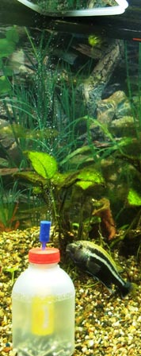
генератор с негерметичной
ёмкостью для кислоты
{kind=link}
На дно ёмкости надо положить груз. Негерметичная сверху ёмкость для кислоты должна быть почти заполнена. Количество раствора соды надо сделать таким, чтобы дно баночки с кислотой касалось поверхности соды. Из-за этого количество растворов в данной экспериментальной конструкции не может быть большим. Фитиль должен доставать от дна ёмкости с кислотой до поверхности соды.
Фитиль на фото обеспечил стабильную работу генератора в течение 3 часов. Через 3 часа уровни кислоты и соды сравнялись. Это не зависит от концентрации растворов, а зависит только от капиллярных свойств фитиля. Вероятно, при уменьшении ширины капилляра в 3 раза можно получить 9 часов. Не очевидно, что зависимость расхода кислоты от сечения капилляра линейная, и лучше проверять её экспериментально.
Если для растворения CO 2 используется "колокол", то особого смысла в распылителе нет. Достаточно сделать в крышке отверстие 0.5 мм, например, иголкой.
Пока я экспериментировал со слабыми растворами. 2-3 грамма соды и кислоты на 1 заправку. Если увеличить концентрацию, а также, если подобрать более удачные ёмкости, то можно добиться работы такого устройства в течение нескольких дней.
В следующем примере ёмкость для кислоты тоже была не герметичной (без крышки), но благодаря широкой крышке ёмкости для соды удалось поместить большее количество растворов внутри этого генератора CO 2 . Использовались растворы, содержащие по 1 чайной ложке соды и лимонной кислоты.
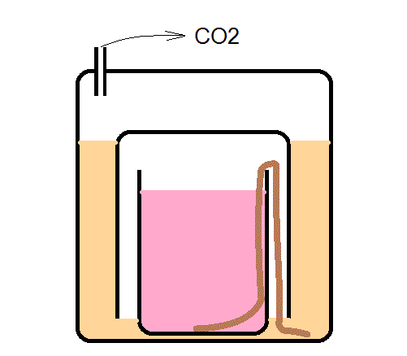
компактный генератор
Такая конструкция с более компактным размещением ёмкости с кислотой внутри ёмкости с содой проработала на одной заправке 4 дня. При уменьшении сечения фитиля и увеличении концентрации растворов, наверно, можно достичь продолжительности 1-2 недели.
Использовалась квадратная стеклянная банка ёмкостью 1 литр с резиновым уплотнением. Внутри неё размещались 2 прозрачных пластиковых стаканчика (донышки бутылок). Размер стаканчика с раствором кислоты 150 мл.
Этот генератор вырабатывал CO 2 достаточно долго и стабильно, но его неудобно разбирать и невозможно выключить.
После экспериментов, я начал кое-что понимать, и научился кое-что рассчитывать. Пришло время создания безнапорного генератора углекислого газа, который сможет работать месяцами и который автоматически отключается при отключении освещения аквариума.
Циклический генератор CO 2
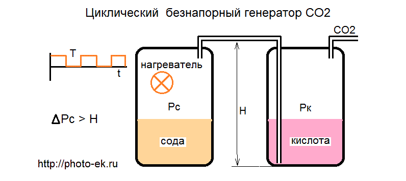
автоматический циклический генератор
Описание циклического генератора перенесено на отдельную страничку
Циклический генератор CO 2 для аквариума ►
Евгений Корниенко 2015-09